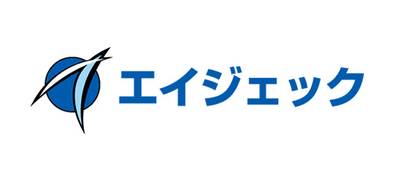
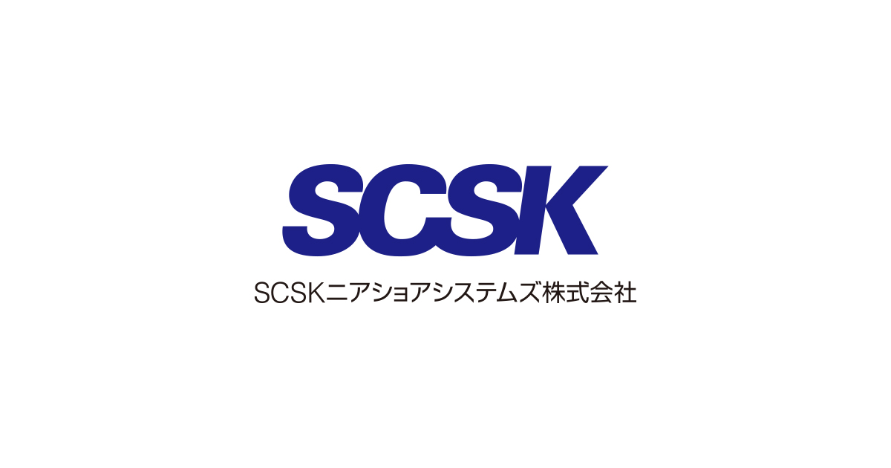

株式会社エイジェック
企業理念
社会に必要とされ続ける企業であるために常に現状に満足せず、
常に新しいものを創造し自他共に成長・繁栄して社会に貢献する。
事業内容
社内業務の一部を外部に委託し、
仕事の効率化を図る「アウトソーシング事業」を主な事業とし、
様々な取り組みを展開しています。
給与
- [地域C:東京・神奈川・千葉・愛知・京都・大阪・兵庫]
- [地域B:北海道・茨城・栃木・富山・長野・岐阜・静岡・三重・滋賀・広島・福岡]
- [地域A:その他地域]
院了・大学卒 基本給+一律手当:205,000円
短大・専門卒 基本給+一律手当:196,000円
院了・大学卒 基本給+一律手当:193,000円
短大・専門卒 基本給+一律手当:184,000円
院了・大学卒 基本給+一律手当:181,000円
短大・専門卒 基本給+一律手当:172,000円
勤務時間
9:00～18:00 / 休憩1時間（原則）
※所属先により変動あり
休日休暇
年間125日、土・日・祝、夏季休暇、年末年始休暇、
GW、産休育休、介護休暇、年次有給休暇（入社6ヵ月後:10日発生）
※所属先により変動あり
福利厚生・保険
雇用保険、労災保険、健康保険、厚生年金、資格取得支援、
キャリアアップ制度、退職金制度あり、保険組合提携保養所割引利用
SCSKニアショアシステムズ株式会社
企業理念
夢ある未来を、共に創る
私たちの使命。夢ある未来を、共に創る。
お客様からの信頼を基に、
共に新たな価値を創造し、夢ある未来を拓きます。
事業内容
- 製造システム事業
- 通信システム事業
- 流通システム事業
- 金融システム事業
- ソリューション事業
- プラットフォームソリューション事業
- ITマネジメント事業
- ビジネスサービス事業
給与
初任給（横浜以外）
208,080円（専門卒／2年）
211,560円（高専・短大卒）
213,900円（専門卒／4年）
217,400円（大卒・高専専攻科卒）
229,060円（大学院卒）
※給与（月給）の金額には、一律地域加算給5,000円、
リモートワーク推進手当1,500円及び20時間分の時間外手当を含む
※時間外労働が20時間を超えた場合は別途時間外手当を支給します
初任給（横浜）
219,720円（専門卒／2年）
223,220円（高専・短大卒）
225,560円（専門卒／4年）
229,060円（大卒・高専専攻科卒）
240,700円（大学院卒）
※給与（月給）の金額には、一律地域加算給15,000円、
リモートワーク推進手当1,500円及び20時間分の時間外手当を含む
※時間外労働が20時間を超えた場合は別途時間外手当を支給します
勤務時間
9:00～17:30 ※在宅勤務制度あり ※コアタイムなしのフレックス勤務あり
休日休暇
完全週休2日制（土・日）、祝祭日および年末年始、有給休暇（※）、
慶弔、子の看護、介護、両立支援休暇（育児・家族看護）、教育、
ボランティア、マタニティ、バックアップ休暇（有給休暇消化時）、
コロナワクチン接種特別休暇(2日)
（※）2021年度取得実績:95.5%(19.1日/年)
福利厚生・保険
雇用保険、労災保険、健康保険、厚生年金保険
制度／各種社会保険、退職金制度、企業年金基金、従業員持株会、慶弔見舞金、育児休業、
介護休業、ボランティア休業、フレックスタイム、社員会、副業制度
施設／保養所・契約リゾート施設・スポーツクラブ